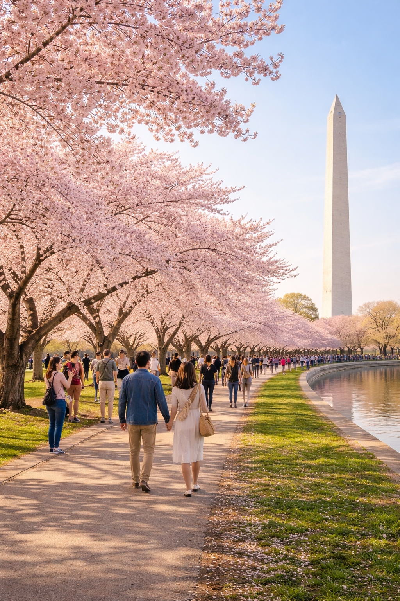
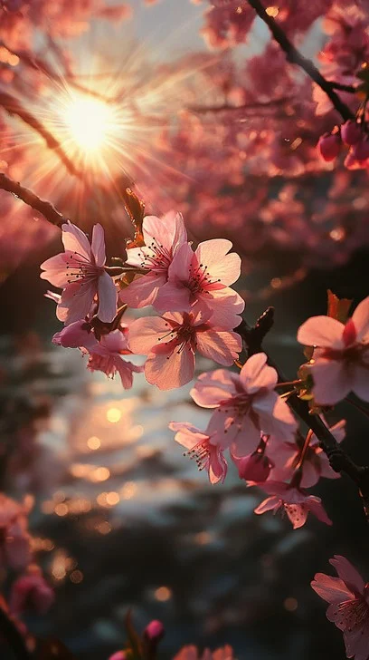
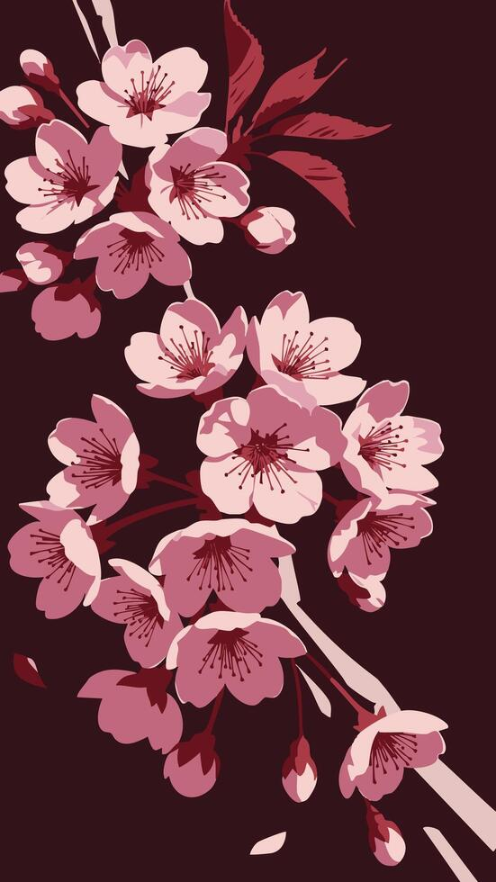

Welcome to my beautiful, pink-themed website.
I am a junior who goes to the Hun school, I like to learn and read, I think Cherry blossoms are very pretty.

Fun Fact: Cherry blossoms belong to the rose family!

In Japan, the bloom represents a "time of renewal."

Washington D.C. has over 3,000 cherry trees.